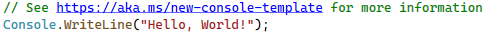

Введение в C#
C# (си шарп) — это язык программирования, применяемый для разработки самых разнообразных приложений, предназначенных для выполнения в среде .NET Framework. Язык C# прост, типобезопасен и объектно-ориентирован. Благодаря множеству нововведений C# обеспечивает возможность быстрой разработки приложений.

C# — язык программирования, сочетающий объектно-ориентированные и контекстно-ориентированные концепции. Разработан в 1998—2001 годах группой инженеров под руководством Андерсa Хейлсбергa в компании Microsoft как основной язык разработки приложений для платформы Microsoft .NET.
C# относится к семье языков с C-подобным синтаксисом, из них его синтаксис наиболее близок к C++ и Java. Язык имеет строгую статическую типизацию, поддерживает полиморфизм, перегрузку операторов, указатели на функции-члены классов, атрибуты, события, свойства, исключения, комментарии в формате XML. Переняв многое от своих предшественников — языков C++, Delphi, Modula и Smalltalk — C#, опираясь на практику их использования, исключает некоторые модели, зарекомендовавшие себя как проблематичные при разработке программных систем. Так, C# не поддерживает множественное наследование классов (в отличие от C++) или вывода типов (в отличие от Haskell).
В настоящее время язык программирования C# — один из самых мощных, быстро развивающихся и востребованных языков в ИТ-отрасли. На нём пишутся самые различные приложения: от небольших десктопных программок до крупных веб-порталов и веб-сервисов, обслуживающих ежедневно миллионы пользователей.